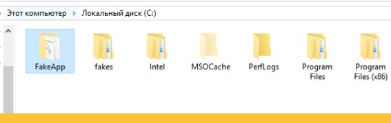
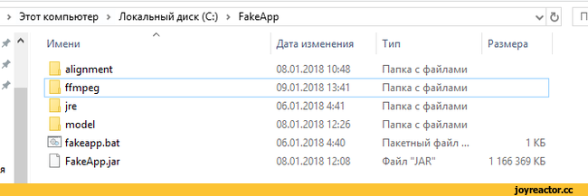
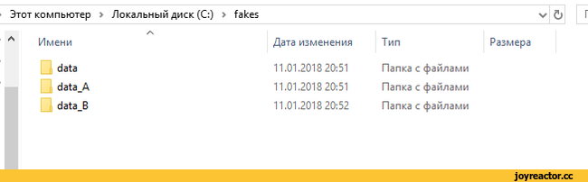
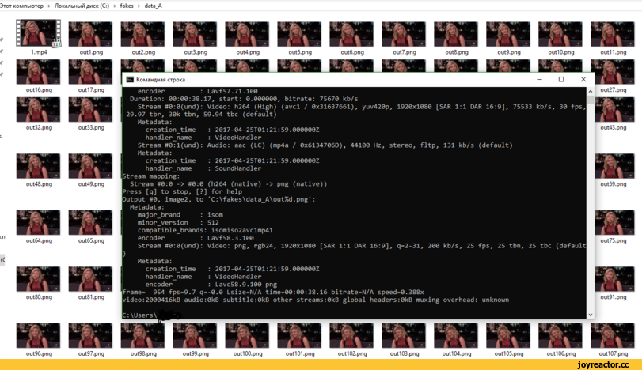
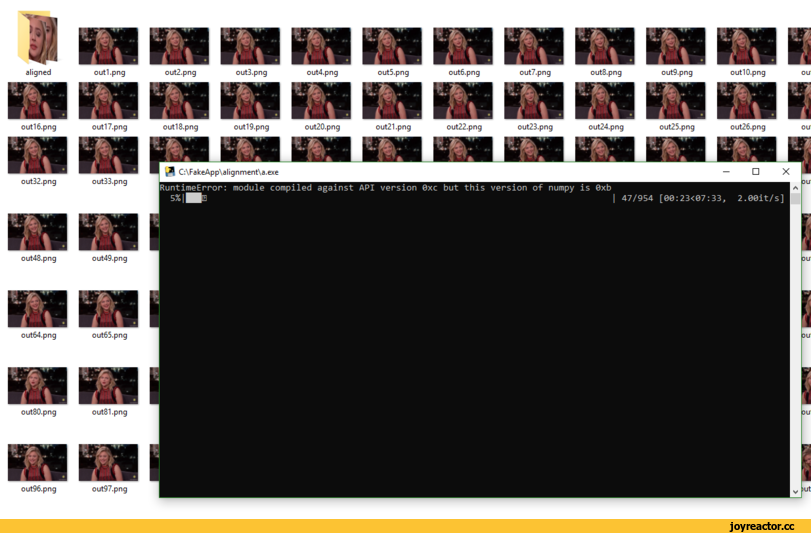
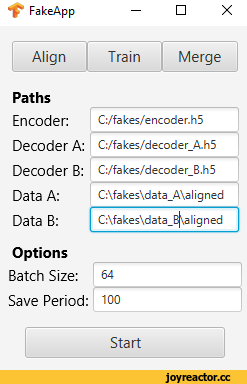
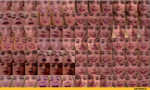
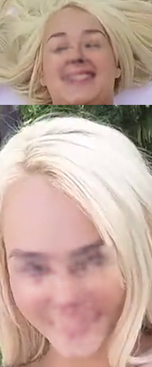
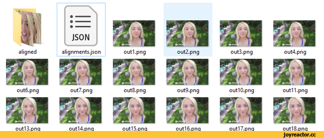

Если у вас Windows 10 64x, 16gb ОЗУ, 1050ti, i7 7700, то запустится 100% без проблем.
*Для начала скачиваем и устанавливаем CUDA 8.0
https://developer.nvidia.com/cuda-80-ga2-download-archive
Установка стандартная, после перезагружаем. Патчить ничего не надо.
*Скачиваем саму программу:
https://drive.google.com/file/d/1_D6JIZsv4JdIqydhfpXCP63HzlvnqCt6/view
*Скачиваем ffmpeg
https://ffmpeg.zeranoe.com/builds/
*ВАЖНО! ПОВТОРЯЕМ В ТОЧЬ ТОЧЬ!!!
Распаковываем FakeApp.zip в корень диск С. А так-же в корне диска С создаем папку fakes, внутри создаем папки data, data_A, data_B.
ffmpeg, распаковываем в папку FakeApp.
Получаем такую картину:



*Этап подготовки видео.
Скачиваем любое видео например с Хлое Морец и теперь нужно на любом видеоредакторе нарезать участки видео с её лицом и склеить в один видеофайл.
Сохраняем нарезанное видео в качестве 720p в папку C:\fakes\data_A называем её 1.mp4
Запускаем командную строку,пишем:
C:\FakeApp\ffmpeg\bin\ffmpeg.exe -i C:\fakes\data_A\1.mp4 -vf fps=25 "C:\fakes\data_A\out%d.png"
В папке C:\fakes\data_A видим как появляются картинки, ждем завершения процесса.

После завершения удаляем в папке C:\fakes\data_A видео 1.mp4
Запускаем fakeapp.bat в папке C:\FakeApp
Выбираем Align, поле Data указываем C:\fakes\data_A
Жмем Start. ЖДЕМ ПОЛНОГО ЗАВЕРШЕНИЯ!
В папке C:\fakes\data_A появится папка aligned где все упорядочены её лица.

*ЭТАП НОМЕР ДВА
Находим видео, где будет заменяться лицо, и повторяем весь процесс, только вместо data_A указываем data_B.
Главное что бы на видео было одно лицо. Если лиц в кадре несколько, программа будет менять их все.
После того как в папке data_A и data_B появилась папка aligned с упорядоченными лицами переходим к тренировке. Этот процесс жопаболь, ибо уходит очень много времени для тренировки нейросети.
Переходим на вкладку Train
В поле Data A указываем путь C:\fakes\data_A\aligned
В поле Data B указываем путь C:\fakes\data_B\aligned

Жмем Start и ждем. Ждем. Ждеееееем. Наблюдаем как постепенно нейросеть учится и качество фото улучшается.
Если надоело ждать или качество вас устраивает, нажимаем клавишу Q, программа сохранит "весы" связей и можно будет в дальнейшем продолжить расчеты, ничего не теряется.
Нейросеть будет учиться примерно сутки на 1050ti.
Результат работы за 4 часа обучения:

Лицо выглядит пока что вот так:

Что радует, лицо идеально стыкуется с этой актрисой. Главное терпение!
Сшиваем готовое видео
Склеивать готовое видео не долго, по времени уходит максимум 1 час.
Отключаем обучение нажав на клавишу Q, переходим во вкладку Merge.
В пункте Data указываем C:\fakes\data_B\aligned
В пункте Direction указываем BtoA ( что на что меняем)
Нажимаем Start. В папке C:\fakes\data_B появится папка merged с изображениями где лица заменены. Теперь нужно картинки превратить в видеозапись. Есть два способа
*Способ 1й
Пример команды:
ffmpeg -i папка/название_секвенции_%05d.jpg -r [FPS, например 25] -c:v libx264 -q:v 2 output.mp4
Склеит секвенцию из папки "папка" с кадрами названия "название_секвенции_00001.jpg", т.е с пятью цифрами. Если хочется добавить звуковую дорожку, то следует дописать вот так:
ffmpeg -i папка/название_секвенции_%05d.jpg -i название_дорожки.wav -r [FPS, например 25] -c:v libx264 -q:v 2 output.mp4
Расширение картинок может быть любым, а не только jpg, тоже самое со звуком.
Вытащить дорожу из видео можно с помощью того же ffmpeg'a
ffmpeg -i название_видео.mp4 -b:a 320k выходная_дорожка.mp3
Получим mp3шку с 320к битрейтом
*Способ 2й.
Запускаем Adobe After Effects.
Файл - Импорт - Файл...
Переходим в папку C:\fakes\data_B\merged
Выделяем все фотки из папки merged. Ставим галку "Эпизод PNG"
Жмем Импорт.
В раскадровке появится видео. Накладываем звук, экспортируем, все готово.
Если в merge вылазит ошибка. Проверьте, не удалили файл alignments.json? Вот так должна выглядеть папка C:\fakes\data_B :

Примечание:
Форма черепа и лица должна быть максимально похожей. Без очков.
Можно сшивать мужские лица, главное следить за растительностью на лице, иначе сильно выделяется.